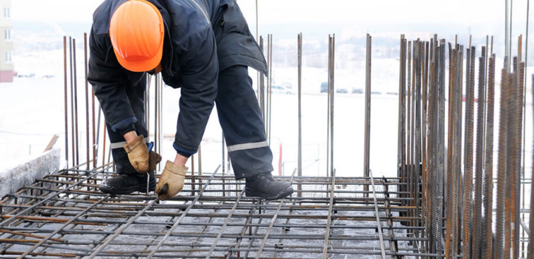

Использование арматуры в строительстве
Практически любой тип строительства даже сегодня сложно представить без качественной металлической арматуры. Именно арматура превращает обычный бетон в железобетон, материал идеально прочный и долговечный, отлично укрепляет фундаменты и другие строительные конструкции.
Что такое металлическая арматура
Металлическая арматура, та, что применяется в строительной сфере – это металлоизделие длинномерного типа, используемое чаще всего именно в строительной отрасли. Такую арматуру можно на полном основании назвать «костями» скелета любой бетонной отливки, ею армируют фундаменты, столбы, заборы и многое другое.
Главная функция этого изделия – противодействие нагрузке и растягивающим напряжениям. Напряжения эти способны разрушить даже самые прочные бетонные строения, если они не будут упрочнены качественной арматурой. Армирование блоков из бетона, а также других конструктивных элементов зданий, применение натяженной предварительно арматуры, обеспечивает:
- максимальную прочность;
- долговечность и надежность;
- устойчивость к нагрузкам.
Поставляется арматура металлическая в мотках (бухтах), либо в прутках, купить арматуру несложно, в любом городе есть множество фирм, которые не только реализуют это металлоизделие, но и оказывают услуги по его доставке, непосредственно на строительный объект. Арматуру металлическую продают и оптом, и в розницу, указывая цену за одну тонну (для оптовых партий), либо за один метр (при реализации в розницу).
В строительстве сегодня применяют прутки, произведенные либо холоднотянутым, либо горячекатаным методом. Это металлоизделие различают также по виду используемого в момент изготовления стального сплава заготовки. В момент производства может применяться дополнительная термообработка, тогда прутки получаются термически упрочненными, с усовершенствованными механическими характеристиками. Стоимость таких выше, чем неупрочненных.
По своему назначению арматура из металла делится на напрягаемую и ненапрягаемую. Металлоизделия первого типа делают более прочными, так как их производят по особой технологии, максимально натягивая армирующие прутики, и заливая их затем раствором бетона, в специальных формах.
В зависимости от типа профиля арматура бывает либо гладкая круглая, либо с периодическим профилем, а в зависимости от ее назначения – монтажная, распределительная или рабочая.
Совершенно отдельная категория изделий – это арматура жесткая стальная, ее производители выпускают в виде балок тавровых. Эти изделия применяют, армируя многоэтажки, а также строения спецназначения.
Применение металлической арматуры
Арматура из стали применяется чаще всего именно в строительной сфере. Стальные сетки и пруты разных видов необходимы, когда нужно укрепить, предотвратить образование растяжений и трещин в строительных конструкциях.
Всю арматуру, активно используемую в строительной отрасли, можно разделить на: хомуты, арматуру монтажную, рабочую, распределительную. Каждый из этих типов металлоизделий имеет свою сферу применения, собственные достоинства и нюансы.
При выборе металлической арматуры, для последующего применения в строительной отрасли, учитывают множество факторов, не только типа материала, но также метод его производства, и способ дальнейшего использования. Правильный выбор металлической арматуры – это гарантия того, что возведенная с ее помощью конструкция будет прочной, долговечной и максимально надежной.